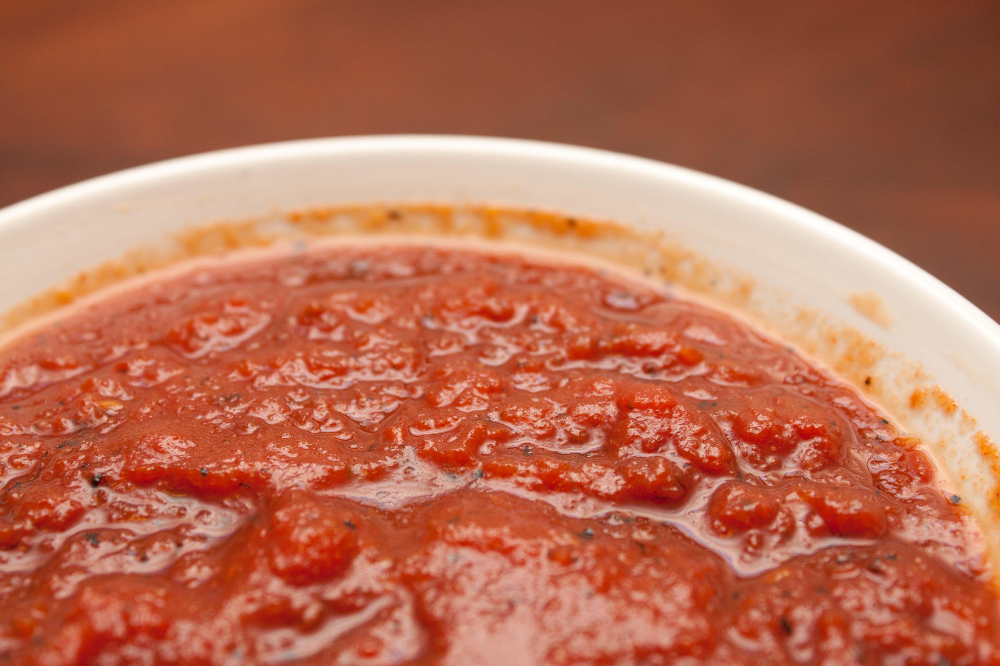

BBQ Sauce

Desription
Making homemade barbecue sauce is as simple as blending all the ingredients until smooth. You don't have to cook this barbecue sauce.
Ingredients
- 1 1/2 cups brown sugar
- 1 1/2 cups ketchup
- 1/2 cup red wine vinegar
- 1/2 cup water
- 1 tablespoon Worcestershire sauce
- 2 1/2tablespoons dry mustard
- 2 teaspoons paprika
- 2 teaspoons salt
- 1 1/2 teaspoons black pepper
- 2 dashes hot pepper sauce
Steps
- Gather all ingredients.
- Combine brown sugar, ketchup, vinegar, water, and Worcestershire sauce in a blender. Season with mustard, paprika, salt, pepper, and hot pepper sauce. Blend until smooth.
- Enjoy!